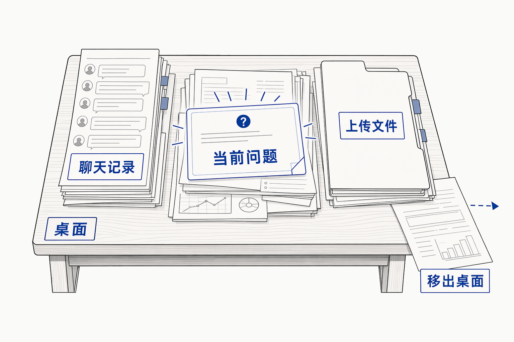
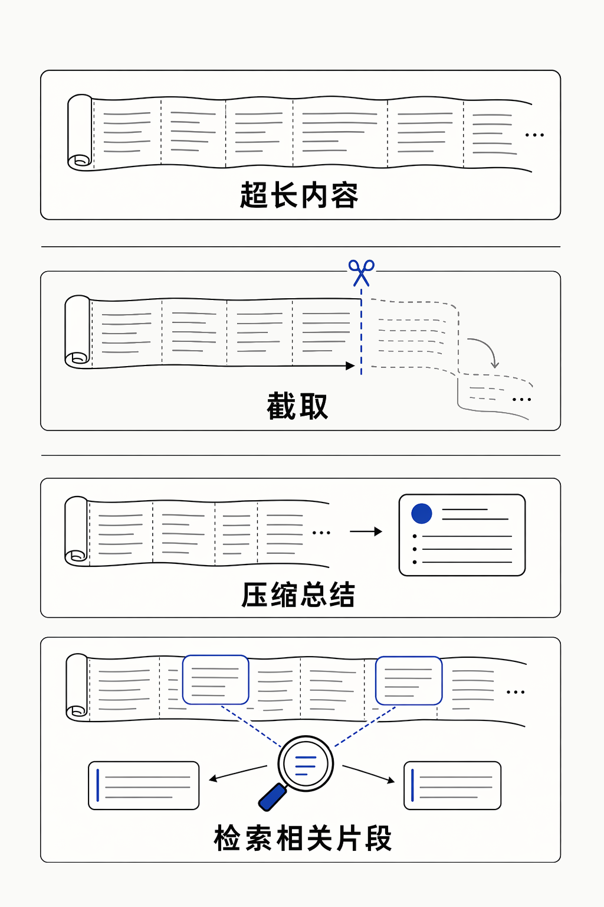
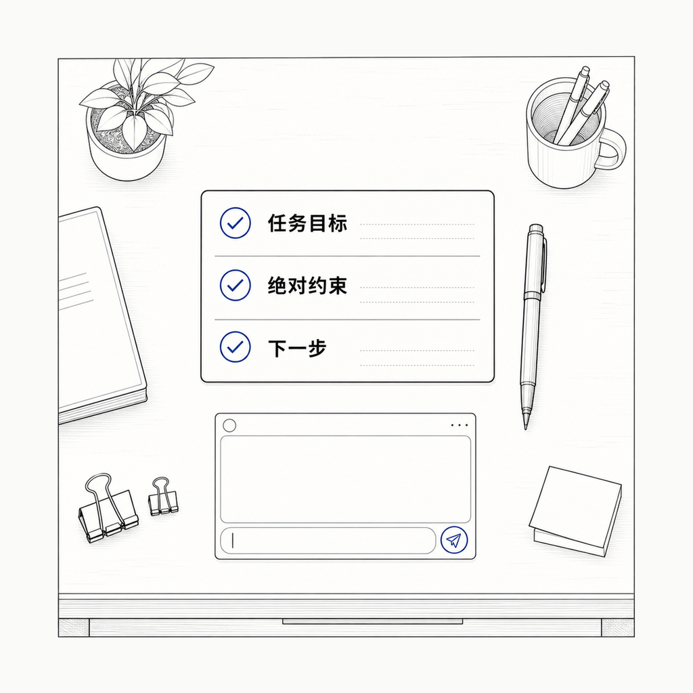
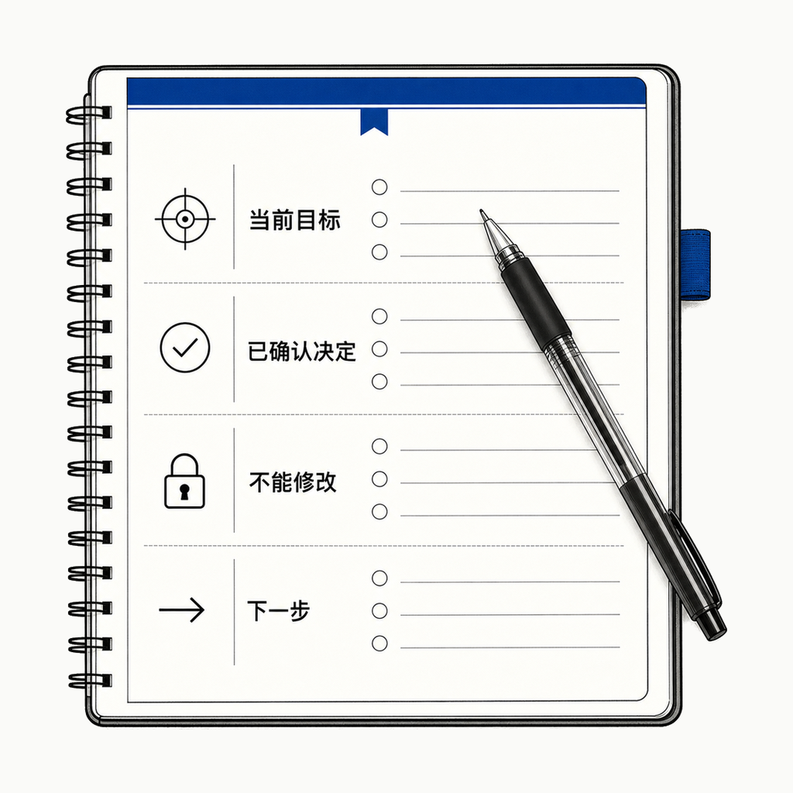

Day 08 · AI Knowledge · Beginner Series
Indigo Porcelain
每天吃透一个
AI 知识点
Context
Window
上下文窗口
跟 AI 聊了很久，它为什么突然忘了你前面确认过的要求？
上下文窗口 · 一次能同时参考多少
01 / 05
Indigo Porcelain
Context
Window
上下文窗口
跟 AI 聊了很久，它为什么突然忘了你前面确认过的要求？
打个比方

AI 每次回答时，把聊天记录、要求、上传文件、代码都摆在眼前这张"桌面"上判断。桌面空间以 Token 为单位计算且有限，资料越堆越多，最早的内容可能被移出桌面--这时 AI 不是失忆，而是这一次已经看不到它了。
Token 与窗口
Token 是模型处理文字时切分出来的小单位，不固定等于一个字，也不等于半个汉字。不同模型的窗口大小不同。
当内容超过窗口，AI 产品的处理方式也不一样：有的截取只保留前面，有的压缩总结成更短的摘要，有的检索相关片段再回答。
所以，它不一定总是简单地"删除最早一句话"。

AI Coding 改页面
不断加内容，规则被冲掉

把目标与约束带走
今日试一次

上下文窗口不是 AI 能记住多少，而是它这一次回答时，能同时参考多少。